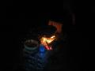

Éjfél múlt, és én kissé még füst- és földszagúan, éppen hazazuhanva jelentem nektek
kitörõ örömmel, hogy a Bombagyár Ökofarm megkezdte mûködését, és a közösség lelkesen fogadta
ezt. Mintegy tucatnyi gyárlakó pihen most megérdemelten sátrakban, hálózsákokban odakint,
és még legalább ennyien érkeznek holnap és vasárnap, hogy az építésben-szépítésben részt
vegyenek. Bõven van szerszám, anyag és munkakedv, ráadásul gyerekököl nagyságú, mézédes
szilvát szüretelhet, aki valamiért már unja a bográcsban fövögetõ dolgokat, mint amilyen
például az én krumplis lecsóm, vagy Dragon fûszeres pecsenyéje.
Borisz,
Wolverine és jómagam KeCseg autójával érkeztünk a helyszínre, miközben Blogin nem gyengén
másnaposan a tömegközlekedés híveit gyûjtötte össze a Nyugatinál, és majdnem az Árpád hídnál is,
de úgy szét volt csúszva, hogy nem találta meg a József Attila színházat. Rossz buszra is
szállt, de nem baj, Lábatlanba Esztergomon át is éppen úgy el lehet jutni, mint Dorogon
keresztül. Állapotáról tekintsétek meg a Werrwolf által készített fényképet.
Csaknem problémamentesen eljutottunk
Lábatlanig, ha nem számítjuk a Tatabánya és Lábatlan közötti úttalan utak labirintusában való
kóválygást, amihez csak Wolverine turistatérképe nyújtott némi segítséget, míg a huzat ki
nem vitte a kocsi ablakán. Idõnként el is tévedtünk, fõleg annak köszönhetõen, hogy KeCseg
csak akkor fordul be egy keresztezõdésbe, ha már két kilométerrel elõtte kórusban üvölti az
összes utas, hogy A KÖVETKEZÕNÉL JOBBRA!! - különben elvész a bõgõ motor gyönyörûségében, és
meg sem áll Pozsonyig. Lábatlanban aztán kiderült, miért nem jó egy konszolidált japán
üzletembereknek készült Hondával terepre menni. A város szélén, az elsõ földúton rettenetes
csikorgás-csörömpölés hallatszott a jármû alól, s ezzel arányosan zöldült KeCseg arca is,
ugyanis ez a számomra hétköznapi kis japán rizsrakétának tûnõ Honda valami nagyon különleges
modell. Annyit értettem a dologból, hogy 1,6 literes, és ennyibõl senki nem hozott ki ilyen
fasza motort, csak a Honda, ezért lopják is ezeket a kocsikat becsülettel (képzavar!), tehát
már csak ezért sem kellene szétverni. Végre átkapaszkodtunk a veszélyes útszakaszon, mire
Borisz, az egyetlen, aki már járt a farmon, egyszer csak felkiáltott, hogy állj,
eltévedtünk, nem erre kell jönni, tolassunk vissza. Vissza is tolattunk... bele egy ott
parkoló zsír új Nissan orrába. Jól behorpadt, a Hondának meg végigrepedt az oldala és
kitört a hátsó lámpája. Míg KeCseg a rettentõ károkon szörnyülködött, én becsengettem a
Nissan gazdájához, és szóltam, hogy a kocsi átépítése kész, jöjjön, nézze meg. Ki is jött
családostul, megnézték, és nem örültek. Neki jobban tetszett egyenesen és ezüstszínben,
mint az új, horpadt és piros Honda-színnel összekaristolt változatban... Betétlap,
kárfelvétel, fényképek. Mire KeCseg végzett, és savanyú képpel jött kifelé a házból,
Boriszt megszállta az isteni szikra, és felkiáltott: mégsem tévedtünk el, NEM IS KELLETT
VOLNA VISSZATOLATNI !! Lapzártánkkor KeCseg még mindig haragszik. Az Ökofarmig már csak úgy
egy kilométert kellett felzötykölõdni, amit egész jól abszolvált a kis Honda, fõleg miután
Boriszt és Wolverine-t gyaloglásra ítéltük, mert õk nyomták földig a kocsi hátulját.
Milyen a hely? Azt kell mondjam:
csodálatos! Csodaszép gyümölcsfák sorakoznak katonás sorokban a domboldalban, kis tisztások
szolgálnak elsõrangú sátorozóhelyként, árnyas tölgyfaligetekben lehet elmélyedni a
druida-meditációban, akinek pedig mindez nem elég, lemehet a Dunához fürdeni, ami ezen a
szakaszon tiszta, csak elég veszélyes, ezért messzire úszni nem ajánlatos. Nem csak a hely
varázsa fogott meg azonban mindannyiunkat, hanem az a tény is, hogy ez itt voltaképpen a
miénk. Azért vagyunk itt, hogy felépítsük, hogy magunkévá alakítsuk, s hogy késõbb is
eljöhessünk ide, amikor csak akarunk, ameddig csak akarunk. Miénk a sok gyümölcs, ami
jelenleg szilva és mandula, bár a mandula inkább úgy két hét múlva lesz igazán érett,
építhetünk ide sátrat, akár házat, rakhatunk tüzet, és senki nem fog odajönni zaklatni,
engedélyekkel buzerálni vagy ellenõrizgetni, megfigyelni.
A csapat férfitagjaival mindjárt neki is kezdtünk
faanyagot gyûjteni a hucul lovak leendõ karámjához. Nem kell valami nagy építményre
gondolni, hiszen a hucul nem egy nagyigényû jószág. A hegy tetejérõl lefelé terjeszkedõ
akácost vettük célba, ahol combvastag fák meredeztek, melyek éppen megfelelnek majd a karám
oszlopai és gerendái céljának. S persze az akác irtása a gyümölcsfák miatt is kívánatos,
hiszen gyakorlatilag gyomnövény, ami egy-két év alatt kiszorítja a kultúrfajokat és más
fákat ott, ahol megtelepszik. A helyszínen talált kézifûrészekkel estünk a bevándorlóknak,
nem eredmény nélkül. Hamarosan fél tucat legallyazott, beépítésre elõkészített akácgerenda
hevert a közelben, jó nagy adag tûzifaként felhasználható hulladékkal, és ezt csak ketten
vágtuk ki Werrwolffal, mert a többiek elõbb betolták a vaddisznópecsenyét. De amikor õk is
felértek, jaj lett az akácosnak, s pláne, amikor a pincében megtaláltuk a benzines
aggregátot és a körfûrészt. Kellett is, mert az a piszok akác vadrózsával is összenõtt, ami
ezernyi törzset növeszt, a hajunk is kihullott volna, mire kézifûrésszel mind
elszabdaljuk. Fáradozásunkat egy tucat karvastag, fiatal tölgyfa köszönte meg halk
lombsusogással. Éljenek soká, ahogy azt egy tölgynek illik az õ õsi termõterületén.
Épp a kitermelt fát cibáltuk le a
hegyrõl, amikor befutott P. monogramú gyárlakónk, a terület gazdája, s rezignáltan
megjegyezte, hogy kedves, hogy kiirtottuk ezt a sok rohadt akácot, de õ igazából épp most
vásárolt anyagot - történetesen épp akácgerendákat - a karámhoz, úgyhogy ha befejeztük a
lecibálást, menjünk, és segítsünk a teherautóról is lecibálni, amit õ hozott. Persze õ
kicsit nagyobb karámban gondolkodott, mint Dragon, aki hetven-nyolcvan négyzetméteres
„zárkát” képzelt el a rövidesen érkezõ elsõ négy huculnak, persze nem állandó
tartózkodásra, csak éjszakára, P. viszont ennek legalább a tízszeresét.
A teherautó azonban nem jött, ezért
inkább fõzni kezdtünk. P. hozott bográcsot és mindenféle konyhai eszközt, így semmi akadálya
nem volt, hogy egy jó lecsót rittyentsek a társaságnak - a pirospaprika hiányát leszámítva.
Az ugyanis kézen-közön eltûnt sötétedés után. Valami ismeretlen fûszerkeveréket szórtam
bele helyette, majd Dragon borított bele valami más fûszerfélét, én pedig többször is
hangsúlyoztam, hogy nem vállalok felelõsséget az étel minõségéért, hiszen bár én mindent
megpróbáltam, de fûszert teremteni nem tudok. Szerencsére volt más, aki tudott: maga a
Jóisten. Miután megköszöntük neki szépen az ennivalót, ahogy azt illik, meglepetten
tapasztaltuk, hogy egyáltalán nem hiányzik belõle már a pirospaprika. Került bele. Honnan?
Nem tudni. De finom volt, bár inkább paprikás krumpli volt, mint lecsó, mert krumplit is
bõven raktam bele, nehogy éhen maradjunk.
Bloginnak és nekem sajnos csak eddig tartott a buli, mert
holnap dolgunk van. Hogy miféle, majd meglátjátok. P. hozott haza bennünket kocsival, s
útközben alaposan kitárgyaltuk, mi mindent lehet még kezdeni ezzel a remek területtel.
Holnap megkezdõdik a karám építése, aztán füvet kell kaszálni és bálázni, hogy a kockákból
megépíthessük a huculok téli szállását. Mondom, igénytelen állat, megfelel neki, ha
szalmakockából építünk neki menedéket, és a tetejét akármivel lefedjük. Holnap még többen
érkeznek a területre, köztük Dragon szakember barátai is, akik majd tanácsokkal segítik a
farm fejlesztését.
Elindulás
elõtt kérdeztem Dragontól, hány hívást kapott, hogy a Kuruc.infó kirakta a telefonszámát,
mint „tolvajét”. Egyetlen SMS érkezett, abban is az állt, hogy az illetõ nem
érti, miért rakják ki újabban tisztességes emberek számát, és sok sikert kíván. Ennyit az
ellenszélrõl.
Aki részt
szeretne venni a farm munkájában, ne habozzon, induljon útnak Lábatlanba akár most! Dragon
mostantól mindig ott lesz kint, bármikor hívható, felkereshetõ. Bárki, aki szeretne egy kis
kikapcsolódást, kerti munkát, vagy csak ötlete lenne a felhasználásra, fejlesztésre,
keresse fel a Bombagyár Ökofarm Szimbiogazdaságot, és járuljon hozzá kis közösségünk
épüléséhez. Minden magyar olvasót nagy szeretettel várunk!